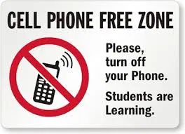
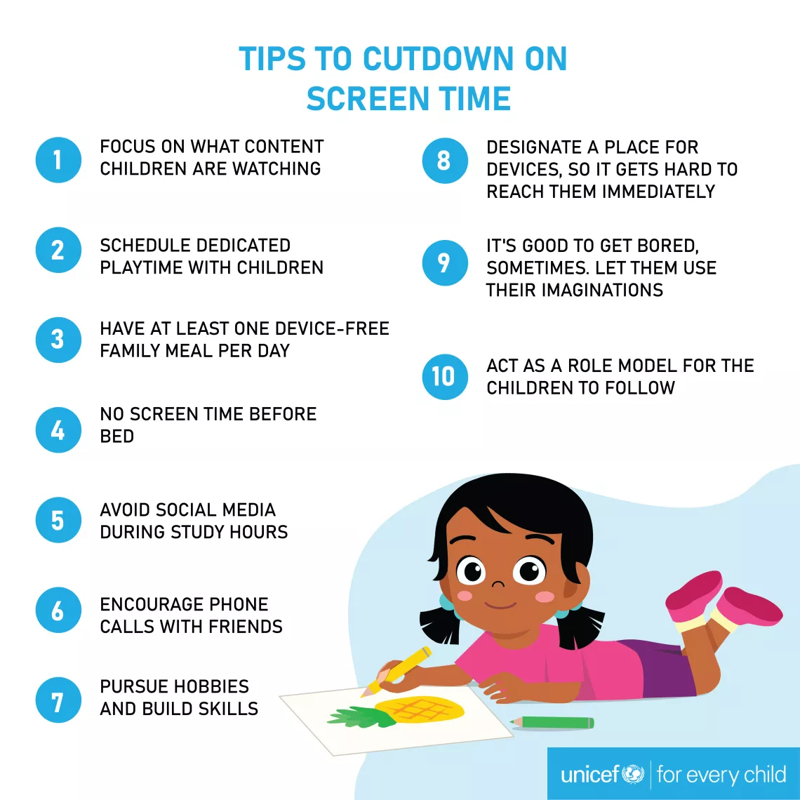
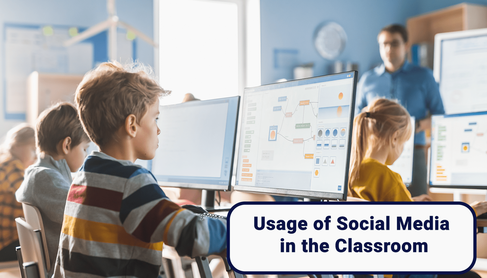

Balanced screen use protects sleep, focus, and real-life relationships. Learn how to spot and reduce unhealthy digital habits.
Digital addiction is when someone cannot control how much they use phones, games, or social media, even when it starts harming their studies, health, or relationships. This page explains signs, causes, and simple steps to build a healthier online-offline balance.
7+ hrsAverage daily screen time for many students.
1 in 5Young people may show signs of problematic use.
24/7Notifications keep the brain “always on” unless we set boundaries.
Scroll or click a card below to jump directly to signs, causes, solutions, media, feedback, and quiz.
Key Signs
Spending more and more time on screens and struggling to stop.
Checking the phone constantly, even during class, meals, or conversations.
Sleep, marks, or work suffering because of late-night scrolling or gaming.
Feeling nervous, angry, or empty when not connected to the internet.
Ignoring hobbies, sports, or friends to stay online.
Why It Happens
Apps, games, and social media use likes, streaks, and rewards to keep you hooked.
Online spaces become an easy escape from stress, boredom, or loneliness.
Notifications and endless feeds train the brain to expect instant updates.
Fear of missing out (FOMO) makes it hard to switch off.
Study and entertainment on the same device blur boundaries between work and play.
Healthy Screen Habits
Fix phone-free times like during meals, family time, and 1 hour before sleep.
Use app timers or digital wellbeing tools to limit daily screen time.
Keep devices out of reach while studying; use focus or do-not-disturb modes.
Replace late-night scrolling with reading, journaling, or calming music.
Talk to someone you trust if you feel screens are controlling your day.
Impact on Life
Lower focus and memory, making it harder to follow classes or complete work.
Disturbed sleep leading to tiredness, headaches, and irritability.
More comparison on social media, which can hurt confidence and mood.
Conflicts at home when screen time replaces family time and responsibilities.
Less movement and outdoor time affecting physical health.
Everyday Balance Habits
Start and end the day without your phone for at least 15–30 minutes.
Keep only useful apps on the home screen and remove time-wasting ones.
Set “scroll limits” for each app and stick to them.
Plan at least one phone-free activity daily—walk, game, art, or talk.
Use tech as a tool to learn or create, not only to escape or compare.
Tech Tools That Help
Screen-time and focus apps that block distracting websites while you study.
Blue-light filters and dark mode to reduce eye strain at night.
Mindfulness and breathing apps to manage stress without endless scrolling.
Parental and self-controls to set limits on gaming or social media.
Online counseling and helplines for support with digital addiction.
🎬 Awareness Video
Watch this short awareness video to understand how digital addiction begins and how small daily choices can restore balance between online and offline life.
📸 Digital Balance Gallery

Campus campaign on phone-free zonesLate-night scrolling and lost sleepClassroom talk on digital wellbeingFriends enjoying an offline eveningWalk-and-talk instead of scroll-and-scroll

Simple tips for screen balance

School event on social media useUsing focus mode for study time
Real Stories of Digital Balance
Schools and families that set clear rules, offer offline activities, and talk openly about screen use see better sleep, stronger focus, and healthier relationships with technology.
50%
Less screen time when phones are kept outside bedrooms.
2×
Better concentration when social apps are muted during study.
30%
Improved sleep after reducing late-night screen use.
1 hr
Daily phone-free time boosts mood and real-life connection.
Balance
The goal is smart use, not zero technology.
Test Your Knowledge — Digital Balance Quiz
Points: 0
Streak: 0
Leaderboard — Top Scores
Top 3 scores stored locally.
Answer explanation
💬 Share Your Thoughts
Tell how this digital addiction hub helped you or share ideas to help students and families use screens in a healthier way.
Why your voice matters
Helps improve awareness content for students and communities.
Inspires new ideas for phone-free activities and digital wellbeing events.
Shows what topics about screens and mental health you want to learn next.
Your choice = your time
Every time you decide to put your phone down and be present, you prove that technology is your tool—not your boss.